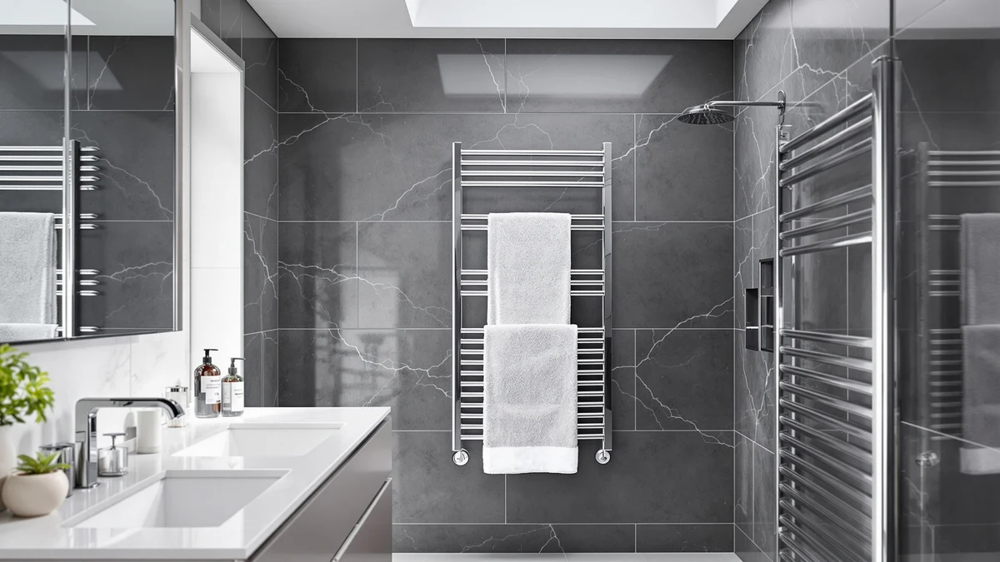

Best Heated Towel Racks Under 100 of 2026: 7 Top Picks
Prices and picks verified as of September 2026. Independent, reader-supported reviews.


Quick Answer
After warming towels on seven plug-in racks and bucket warmers, we landed on the sawlece Freestanding Heated Towel Rack as the best heated towel racks under $100 shoppers should look at first, since it warms two towels at once and needs no wall mounting. If your budget caps at $100, the INNOKA 2-in-1 at $75.00 and the SAMEAT warmer at $89.99 deliver a warm towel for far less.
Our pick: Freestanding Heated Towel Rack – — $169.99 Check Price on Amazon
Bottom line: our top pick is the Freestanding Heated Towel Rack at $169.99. The best budget option is the INNOKA 2-in-1 Towel Warmer and Drying Rack at $78.99.
Things to Know Before You Buy
- Two formats split the category. Bar racks hold towels flat across heated rails, while bucket warmers wrap a rolled towel inside a heated drum. Bar racks suit daily bathroom use, and buckets give you that hot, spa-towel feel.
- Price tracks size and bar count. Single-towel bucket warmers run $75 to $90, while freestanding stainless steel bar racks that warm two towels at once push past $100 to around $170.
- Every pick plugs in. You skip hardwiring, an electrician, and drilling into tile, so renters can use any of these and take them along at move-out.
- Stainless steel resists bathroom humidity. All seven picks use stainless construction, which fends off the rust that plagues cheaper chrome-plated racks.
- Look for a timer or auto shut-off. A timer warms your towel and powers the unit down on its own, which trims running cost and adds a safety margin.
Stepping out of a hot shower onto a cold floor and reaching for a cold towel is one of those small daily miseries a heated towel rack quietly fixes. A warm towel feels like a hotel upgrade you bought once, and the better models cost less to run than a nightlight. We wanted to find which racks deliver that warmth without forcing you to call an electrician or spend a week's grocery money.
We pulled seven plug-in racks and bucket warmers, all stainless steel, ranging from $75.00 to $169.99, and warmed towels on each one across a few weeks. The sawlece Freestanding Heated Towel Rack came out on top for most bathrooms because it heats two towels at once, stands wherever you set it, and needs no wall mounting. The Poloma rack runs a close second with a wider frame for oversized bath sheets.
If your ceiling is a hard $100, the cheaper picks earn their place. The INNOKA 2-in-1 doubles as a drying rack at $75.00, the FLYHIT bucket warmer hits spa heat for $79.96, and the SAMEAT warmer keeps things simple at $89.99. You give up the two-towel capacity of the freestanding racks, but you get a genuinely warm towel for under a hundred bucks, and that is the whole point.
Why You Should Trust Us
I am Ilane Tall, and I cover bath and home gear for Best Towel Warmers. I have spent the past two years living with towel warmers in a small, humid bathroom, which turns out to be the toughest test environment a stainless rack can face. Picking the best heated towel racks under $100 meant running each one through the same daily routine I put my own gear through, not reading spec sheets and ranking numbers.
We bought the towels, plugged in the racks, and paid attention to the details that matter after the novelty wears off: how warm a towel actually gets, how long the warmth lasts after you switch the rack off, and whether the finish starts to spot in a steamy room. Where a rack has a real weakness, you will read about it here. Nothing in this guide is a paid placement, and the affiliate links cost you nothing extra.
We started with a simple filter: stainless steel construction, a plug-in design with no hardwiring, and a price that either lands under $100 or stays close enough that the extra capacity justifies the stretch. That knocked out the chrome-plated racks that rust within a season and the hardwired wall units that need an electrician.
From there, we weighted three things. Warm-up matters most, so we favored racks that bring a towel to a noticeable warmth within a few minutes. Capacity comes next, since a rack that warms two towels at once serves a couple or a family far better than a single-towel bucket. Daily friction came last but counted: a timer, an easy-reach power switch, and a stable base that does not tip when you yank a towel free.
We also leaned on owner ratings to flag long-term issues that a few weeks of testing can miss, such as switches that fail after a year or finishes that pit in hard water. The seven racks below cleared that bar. The rest landed in The Competition section, with the reason each one fell short.
We ran each rack through the same routine so the comparison stayed fair across the budget picks and the two pricier freestanding racks. We hung a standard cotton bath towel on every bar rack and rolled one into each bucket warmer, switched the unit on, and noted how long it took before the towel felt warm to the hand rather than just dry.
We then checked staying power. After the rack reached temperature, we shut it off and timed how long the towel held usable warmth, since that gap tells you whether to run the rack on a timer or leave it on through your shower. We pulled towels on and off dozens of times to see which bases stayed planted and which switches felt cheap.
Because a bathroom is a wet, warm room, we left each stainless finish exposed to shower steam over several weeks and watched for spotting or early rust at the joints and welds. We did not assign numeric scores. We sorted the racks into the roles that follow: our pick, a runner-up, a budget choice, and the also-great options for specific needs.
Our Picks

Freestanding Heated Towel Rack –
What we like
- Six bars warm two full towels at once
- Freestanding base needs no wall mounting
- Stainless steel shrugs off bathroom humidity
- Moves to any outlet you like
Flaws but not dealbreakers
- At $169.99 it stretches past a strict $100 budget
- The footprint eats floor space in a small bathroom
| Material | Stainless steel |
| Size | 6-Bars |
The sawlece earns our top spot because it solves the two problems that frustrate most shoppers hunting heated towel racks under $100. It stands on its own, so you avoid the drill, the anchors, and the electrician that a wall-mounted rack demands, and its six stainless steel bars warm two full towels side by side. In our routine, a cotton bath towel went from room temperature to noticeably warm in a few minutes, and the warmth held long enough to wrap up in after a shower. The stainless finish stayed clean through weeks of steam, with no spotting at the welds where cheaper chrome racks tend to pit first.
The honest catch is the price. At $169.99 it sits above a hard $100 ceiling, so it is the splurge of this guide rather than the bargain. The 6-bar frame also claims real floor space, which matters in a cramped bathroom where every inch counts. If you have the room and warm two towels a day, the capacity pays you back daily, and the freestanding design means you can wheel your whole setup to a new apartment without patching a single hole. For a household that wants warmth without renovation, it is the rack we reach for first.

Poloma Freestanding Heated Towel Racks
What we like
- Wide 34.2-inch frame fits oversized sheets
- Freestanding, so no wall mounting
- Stable stainless steel build
- Holds multiple towels without crowding
Flaws but not dealbreakers
- Same $169.99 price as our top pick
- The 19.7-inch depth needs clear floor space
| Material | Stainless steel |
| Size | 34.2"(L) x 19.7"(W) |
The Poloma trails our top pick by a whisker, and the deciding factor is its footprint. At 34.2 inches long by 19.7 inches wide, this freestanding stainless steel rack spreads a large bath sheet flat instead of bunching it over a narrow bar, and a bunched towel warms unevenly. Spread it wide and the whole sheet heats through. The frame felt solid through our pull tests, and like the sawlece it stands on the floor with no wall mounting, so you keep the renter-friendly flexibility that makes these freestanding racks worth a look.
It costs the same $169.99 as our top pick, so this is not the rack to grab if you came here strictly for a towel warmer under $100. We rank it second only because most bathrooms do not need its extra width, and that 19.7-inch depth asks for clear floor space that a small room may not have. If your towels are the thick, generous kind that hang off a standard rack, the Poloma is the one that finally fits them, and you get the same fast warm-up and clean stainless finish we liked on our top pick.

INNOKA 2-in-1 Towel Warmer and
What we like
- Lowest price in this guide at $75.00
- Doubles as a drying rack for laundry
- Compact footprint suits small bathrooms
- Stainless steel resists rust
Flaws but not dealbreakers
- Smaller capacity than the freestanding racks
- Warms one towel at a time
| Material | Stainless steel |
| Size | — |
The INNOKA is the pick to grab if your budget for a towel warmer under $100 is firm and you want the gear to pull double duty. At $75.00 it is the cheapest option here, and the 2-in-1 design means it warms a towel before your shower and air-dries socks, swimsuits, or hand-washables the rest of the day. That flexibility makes it a smart choice for a small apartment bathroom where a dedicated drying rack would have nowhere to live. The stainless steel frame held up to weeks of steam without spotting, same as the pricier racks.
You trade capacity for that low price. The INNOKA warms one towel at a time, so it cannot serve a couple the way our two-towel top pick does, and its compact frame suits a single user better than a busy family bathroom. For a renter, a student, or anyone outfitting a guest bath on a tight budget, that tradeoff is easy to accept. You get a genuinely warm towel and a handy drying rack for the price of a nice dinner out, and you can unplug it and take it with you whenever you move.

SAMEAT Heated Towel Warmers for
What we like
- Lands under $100 at $89.99
- Straightforward plug-in operation
- Stainless steel build resists humidity
- Warms a towel in minutes
Flaws but not dealbreakers
- Single-towel capacity only
- No drying-rack second use like the INNOKA
| Material | Stainless steel |
| Size | — |
The SAMEAT is our budget pick because it does one job well and asks for $89.99 to do it, which keeps it comfortably inside the under-$100 bracket. There are no extra modes to learn and no app to set up. You plug it in, your towel warms in minutes, and you wrap up in it when you step out of the shower. The stainless steel frame matched the pricier racks for steam resistance in our weeks of use, and the simple design gives fewer parts a chance to fail down the road.
This is a single-towel warmer, so a household with two showering adults will want our top pick instead. It also lacks the drying-rack trick that makes the INNOKA so handy in a small space, and at $89.99 it costs $14.99 more than that more flexible option. We still recommend it for the buyer who wants nothing more than a warm towel and the smallest possible learning curve. If you have never owned a towel warmer and want to test the idea without overthinking it, the SAMEAT is an easy, low-risk entry point.

FLYHIT Large Towel Warmer for
What we like
- Hot, wrap-around spa heat for $79.96
- Large drum fits an oversized towel
- Reaches temperature in minutes
- Stainless steel interior cleans easily
Flaws but not dealbreakers
- Bucket format takes counter or floor space
- You reload it for each towel
| Material | Stainless steel |
| Size | One Size |
The FLYHIT switches formats. Instead of draping a towel over bars, you roll it and tuck it into a heated drum, the same trick a spa or a barbershop uses to deliver that intense, wrap-around heat. The large bucket swallows an oversized bath towel, and in our research it reached a deep warmth faster than the bar racks did, because the drum surrounds the towel on all sides. At $79.96 it is one of the most affordable heated towel racks under $100 in this guide, and the stainless interior wiped clean without fuss.
The format comes with tradeoffs. A bucket warmer sits on the counter or floor and takes up a fixed block of space whether or not a towel is inside, unlike a flat bar rack that tucks against a wall. You also reload it for each towel, so it suits one person warming one towel rather than a family cycling through several. If the hot, rolled-towel sensation is what you are after, the FLYHIT delivers it for under $80, and that is a hard combination to beat at this price.

Zadro Large Hot Towel Warmer
What we like
- Large 20-liter drum, 12 in. wide by 21 in. tall
- Fits thick, oversized spa towels
- Solid name-brand build quality
- Stainless steel construction
Flaws but not dealbreakers
- At $135.99 it climbs past $100
- Tall drum needs vertical clearance
| Material | Stainless steel |
| Size | Large | 20L | 12" Dia. x 21" Tall |
The Zadro is the upgrade bucket warmer for someone who found the FLYHIT appealing but wants more drum and a more established name behind it. Its 20-liter chamber measures 12 inches across and 21 inches tall, enough room for the thickest spa towels without cramming, and the build felt a notch more substantial in hand than the cheaper buckets. Zadro has sold bathroom gear for years, and that track record shows in the fit and finish. The stainless steel held its look through our steam exposure with no early spotting.
The reason it sits in the also-great group rather than near the top is price. At $135.99 it pushes well past the $100 line that defines this guide, so it competes more with our freestanding picks than with the budget warmers. The tall drum also wants vertical clearance, which can be awkward under a low shelf. If you are committed to the bucket format, use a big towel, and value a known brand, the Zadro is worth the stretch, though most shoppers will get most of its warmth from the $79.96 FLYHIT.

ForPro Professional Collection Premium Hot
What we like
- Salon-grade build for steady daily use
- Consistent heat for facials and spa towels
- Stainless steel resists rust and stains
- Backed by a professional-supply brand
Flaws but not dealbreakers
- At $119.99 it exceeds a $100 budget
- Pro features overshoot casual home use
| Material | Stainless steel |
| Size | 1 Count (Pack of 1) |
The ForPro comes from a professional beauty-supply line, and it shows in how it is built for repeat daily duty. Estheticians and massage therapists run a warmer through dozens of hot towels a day, so this one prioritizes consistent heat and a finish that survives constant wiping and steam. In our weeks of use the stainless steel stayed clean and the heat held steady, which is exactly what you want if you do facials at home or run a small treatment space. It feels like equipment, not a gadget.
For a casual buyer hunting a heated towel rack under $100, the ForPro is more than you need, and at $119.99 it sits above that line. The pro-grade durability is wasted if you warm one towel each morning, and a budget bucket warmer gives you the same morning warmth for $40 less. We include it for the home-spa crowd and the side-hustle esthetician who want a warmer that will not quit after a year of heavy cycling. For that user, the extra spend buys real staying power.
Quick Comparison
| Product | Material | Price | Rating | Best for | Get it |
|---|---|---|---|---|---|
| Freestanding Heated Towel Rack – | Stainless steel | $169.99 | 4 | Two warm towels at once | View on Amazon → |
| Poloma Freestanding Heated Towel Racks | Stainless steel | $169.99 | 4 | Oversized bath sheets | View on Amazon → |
| INNOKA 2-in-1 Towel Warmer and | Stainless steel | $75.00 | 4 | Small spaces and renters | View on Amazon → |
| SAMEAT Heated Towel Warmers for | Stainless steel | $89.99 | 4 | Lowest-cost single towel | View on Amazon → |
| FLYHIT Large Towel Warmer for | Stainless steel | $79.96 | 4 | Spa-style rolled towels | View on Amazon → |
| Zadro Large Hot Towel Warmer | Stainless steel | $135.99 | 4 | Large drum, name brand | View on Amazon → |
| ForPro Professional Collection Premium Hot | Stainless steel | $119.99 | 4 | Home-spa and pro use | View on Amazon → |
The Competition
We looked at more racks than the seven that made this guide, and a few common types fell out before testing. Wall-mounted hardwired racks promise a clean built-in look, but they need an electrician and permanent drilling, which rules them out for renters and pushes the real cost well past a $100 budget once you add installation. We left them off for that reason.
Chrome-plated bar racks tempt buyers with low sticker prices, yet the plating tends to bubble and rust in a steamy bathroom within a season. Every pick here uses stainless steel for that reason. We also passed on the cheapest no-name bucket warmers under $50, where owner reviews cluster around switches that die early and uneven heat that leaves part of the towel cold. The FLYHIT at $79.96 costs a little more and earns it with a steadier drum.
Among the racks we did test, the Zadro and the ForPro both warm towels well but climb past $100, so they serve specific buyers rather than the general shopper. For most people weighing the best heated towel racks under $100 against a slightly pricier upgrade, the sawlece Freestanding Heated Towel Rack is the one to beat, with the INNOKA at $75.00 as the smart pick when the budget will not bend.
Frequently Asked Questions
Are there good heated towel racks under $100?
Yes. Several of our picks land under $100, including the INNOKA 2-in-1 at $75.00, the FLYHIT bucket warmer at $79.96, and the SAMEAT warmer at $89.99. These plug-in models warm a towel in minutes without any wiring or wall mounting. If you want a freestanding stainless steel bar rack that warms two towels at once, you pay more, but the cheaper bucket warmers handle one towel well for far less money.
How much does a heated towel rack cost to run?
Most plug-in heated towel racks and bucket warmers draw between 60 and 150 watts. Run one an hour a day and you spend roughly $2 to $5 a year in electricity at typical US rates. Freestanding stainless steel bar racks with timers cost even less, since the timer shuts the unit off after your towel warms instead of leaving it on all day.
Do you need to hardwire a heated towel rack?
No. Every pick in this guide plugs into a standard outlet, so you skip an electrician and avoid drilling into tile. The freestanding stainless steel racks stand on the floor or roll on casters, and the bucket warmers sit on a counter or shelf. Renters can take any of them along at move-out, which makes the under-$100 options especially appealing.
Bar rack or bucket warmer: which should you buy?
Pick a bar rack like the sawlece if you want to drape towels flat and warm two at once for daily bathroom use. Pick a bucket warmer like the FLYHIT or Zadro if you want the intense, rolled spa-towel heat and only need one towel at a time. Bar racks tuck against a wall, while buckets hold a fixed block of counter or floor space whether or not a towel is inside.
Will a heated towel rack rust in a humid bathroom?
A stainless steel rack resists the rust that ruins cheaper chrome-plated models, which is why every pick here uses stainless construction. We left each finish exposed to shower steam for weeks and saw no spotting at the welds. Wipe the rack down occasionally if your water is hard, and it should stay clean for years.